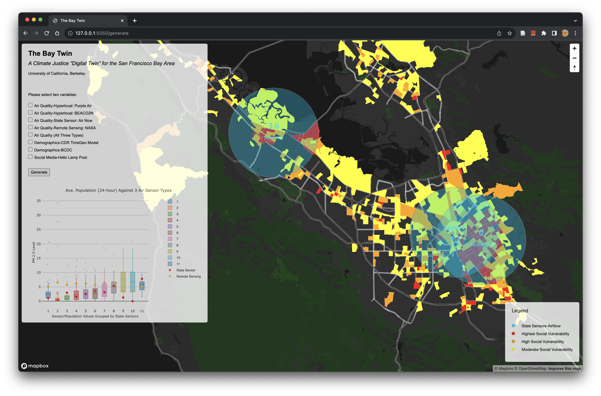
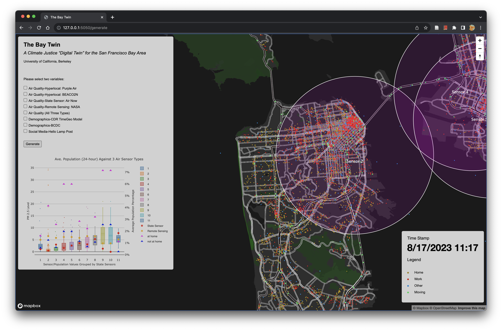

[The Bay Twin: A Climate Justice “Digital Twin” for the San Francisco Bay Area]
Key Words: Digital Twin; Climate Change; Environmental Vulnerability
[FULL ARTICLE] Project in Progress.
This post might come from a pre-copy-editing or a post-print author produced file of an article accepted for publication. For the efinitive publisher-authenticated version, please refer to the full article link.
Highlights
Based on multi-level environmental and CDR/LBS data, the tool highlights how climate change is influencing different social groups in the Bay Area.
Background
Climate change is deeply affecting everyone in the Bay Area. However, there still lacks a tool of informing relevant policies to achieve equitable environmental planning.
Research Aim
"The goal of building the Bay Twin would be to see correlations between how people move, how air pollution moves, and how water moves in this dynamic and densely populated region to support improved decision-making.""
Methodology
The applicaiton is being developed using a flask-based backend system (Fig. 1). "Using an animated, multi-layered map and dashboard (Fig. 2), we could see across the scales of space and time the otherwise obscure patterns connecting individual people, transportation technologies, and buildings across the Bay region. These connections can inform decisions at airports and seaports, in transportation projects and traffic flows, among building ventilation operators and health service providers."

Air Quality Comparison
We can compare multi-scale air quality data collected in real-time using APIs.
Hyperlocal Sensor (Purple Air) vs. State Sensor (AirNow)
In the plot, red dots are PM 2.5 readings from AirNow sensors, and boxes are grouped purple air readings near AirNow sensors (Fig. 3-4).


State Sensor (AirNow) vs. Remote Sensing (NASA)
As shown in Fig. 5, red dots in the plot are PM 2.5 readings from AirNow sensors, and orange dots represent RS readings near AirNow sensors. In the map, a 24-hour loop of the NASA data together with the AirNow is displayed.

Air Quality & Demographics
As shown in Fig. 6-7, the BCDC community vulnerability data is displayed with air quality data. This endpoint can be used to inform relevant agencies about areas that have high social vulnerability and low air quality.

Air Quality & CDR-LBS Data
As shown in Fig. 8-9, the CDR-LBS data is displayed with air quality data. The map is animated, as CDR-LBS data is parsed in minute level. Therefore, it is convenient for us to see and calculate which urban area has high work/at home population but poor air quality in different time periods.


Air Quality & Social Media Data
As shown in Fig. 10, the website is linked to APIs that can be used to access social media posts about air quality / climate change. Therefore, we can learn about how people feel about their surroundings in real-time.